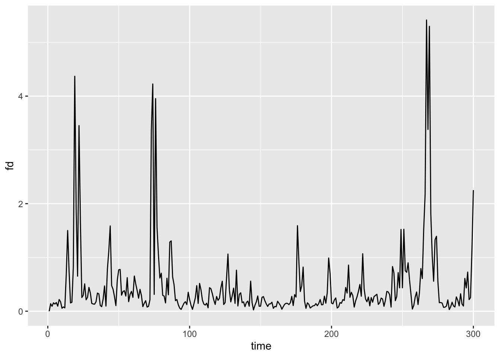
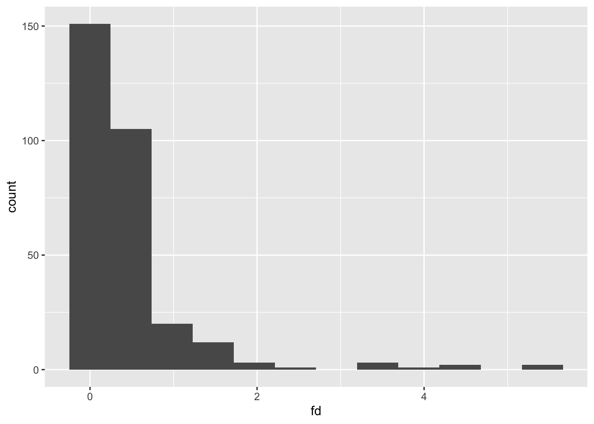
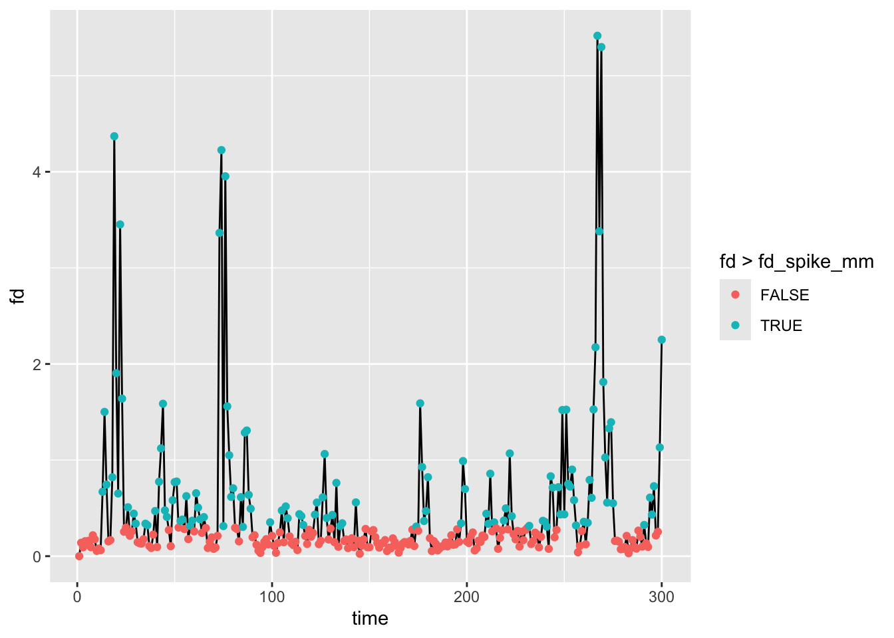
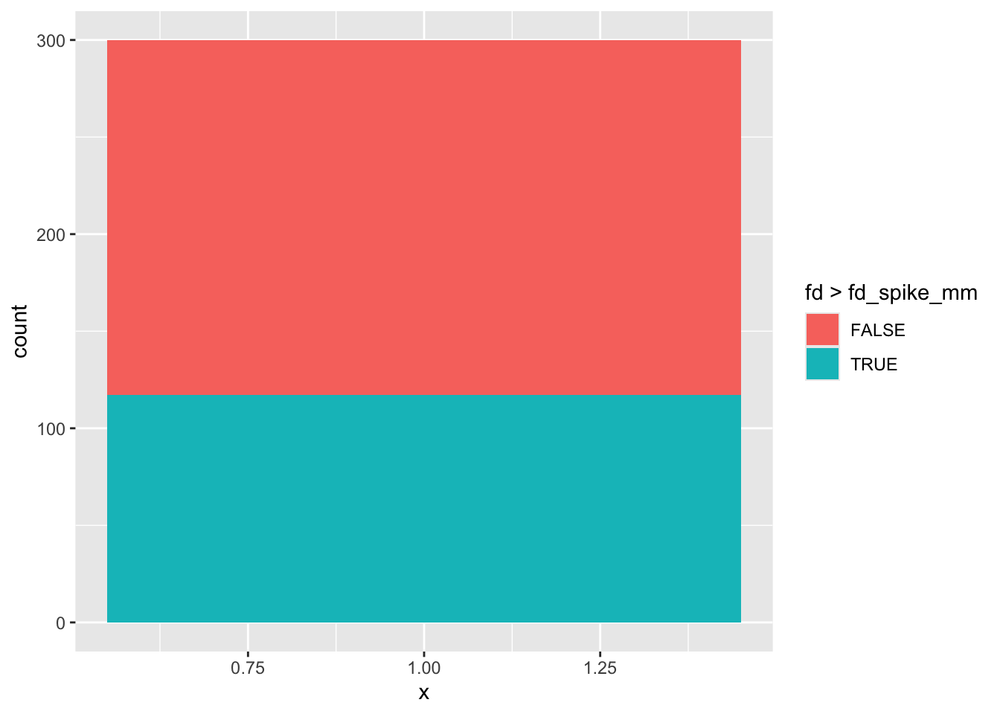
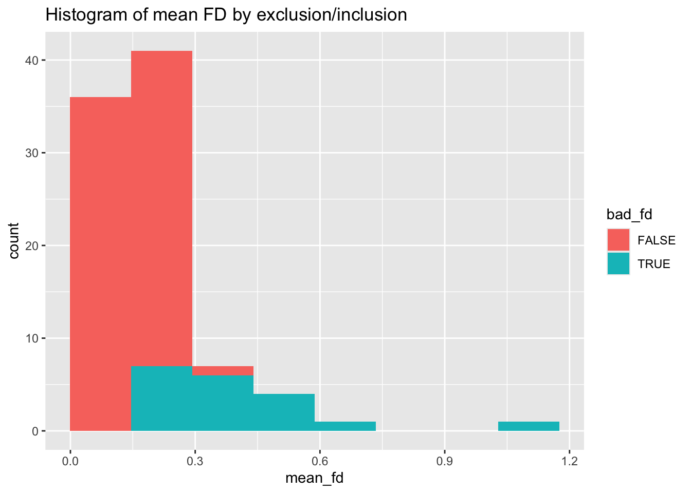
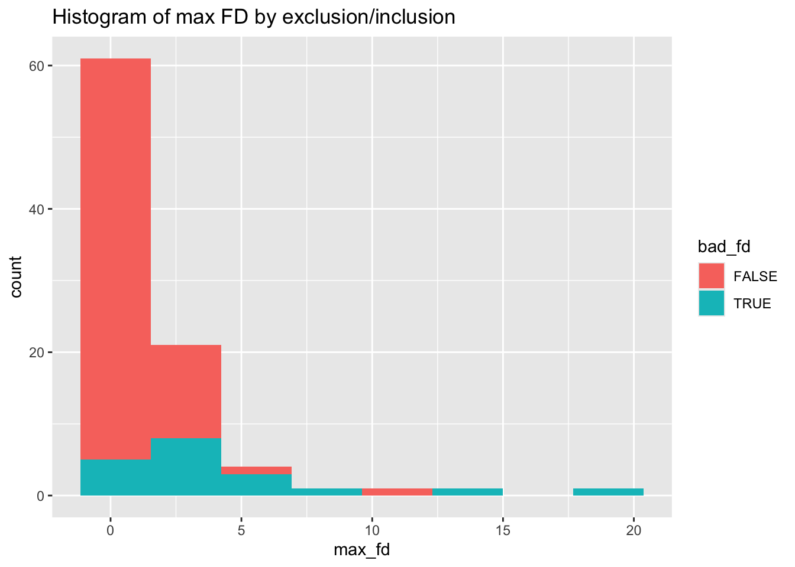

Warning: untar(compressed=) is deprecatedHow good programming practices support scientific reproducibility
Variable definitions that control algorithmic decisions below. These are placed here to draw our attention to them – if we wish to change our decisions throughout the pipeline, these can be adjusted, rather than having to hunt them down below.
Code
#parameters that control our algorithmic decisions about what constitutes bad head motion
#we put these here to draw our attention to
fd_spike_mm <- 0.3 #movement greater than this threshold (in mm) is considered a movement spike
p_spikes_cutoff <- 0.2 #if there are more than this proportion of spikes (based on fd_spike_mm), exclude the subject
fd_max_mm <- 10 #any movement greater than this amount should lead the subject to be excludedIntroduction
One of the most important skills you learn along the data science path is not specific to R, but is crucial to solving data problems. People have called this different things such as “thinking algorithmically”, “thinking like an engineer”, or “solving problems like a computer programmer.” If you’re not an expert on algorithms and are neither a computer scientist nor an engineer, you might ask “what does this really mean?” The answer is hard to convey conceptually, but instead depends heavily on the experiences you accrue as you solve data problems.
My goal here is to convey some of the lessons I’ve learned over the past 10 years and give you an approximate framework for solving data management and analysis problems that extend beyond the basics of the data wrangling and programming.
Thesis
One of the greatest threats to reproducible science is the use of data analysis scripts that are poorly organized, poorly documented, and that reflect the sometimes unpredictable sequence of decisions made by the scientist. If it seems hacky, it probably is hacky – and may not be reproducible!
When we solve analysis problems using code, we often begin by hacking our way through the forest. Each step is solved sequentially without necessarily anticipating or representing the additional steps that lie ahead. In part, this is inevitable. We cannot easily predict the complexity of the problem or the intermediate solutions we will test. Therefore, we may make decisions about how to handle a problem, only to reverse on our approach later on. One difficulty is that we may not ‘undo’ all of our earlier steps, or we may suffer from copy-paste errors in the code that lead to inconsistencies in the solution. These human errors are inevitable, but very threatening to reproducibility. Therefore, we need to implement programming practices that mitigate the risk of code yielding unexpected, invalid, or unpredictable results.
Literate programming documents like R Markdown and Jupyter notebooks make the flow of an analysis more accessible, but they do not necessarily support good practices in coding that make code less vulnerable to mistakes.
Corollary: The more complex the problem, the more we must test each piece of the pipeline as we scale up from prototype to general solution.
The value of functional programming
One of the greatest assets to reproducible (data) science is the use of programming paradigms that enforce good practices. In particular, functional programming, in which we view data analysis as a set of predictable transformation functions, supports a clearheaded approach to data problems that blocks many programming crutches.
When we write functions, they demand that we provide specific inputs (arguments) and we demand that the function produce a predictable set of outputs. This should be an unbreakable covenant that leads us to trust functions – and in a way, to forget how they work – after we have validated that they work as expected.
Functions should validate their inputs. For example, if we are expecting a set of time codes for when events happened in the experiment, times should not be negative! Or, if the function is expecting a 2D matrix and we pass in a vector, what should happen?
Motivating example: diagnosing and making decisions about head movement in fMRI
I know most of you aren’t in the neuroimaging world, and my goal isn’t to confuse you with all of the details (as people like to say, “it’s complicated”). And the example is not intended to pitch to the imaging crowd, but instead to demonstrate a real-world data problem that has parallels to many other data types (behavior during experiments, self-reports distributed across files and folders, etc.).
With regard to fMRI, I’ll simply convey that head movement during a scan is a huge bugaboo because it fundamentally corrupts the signal. To wit:

There are different ways to mitigate the problem, but suffice it to say that we need to a) know how bad it is, b) detect and potentially remove motion ‘spikes’ from analyses, and c) consider whether to discard someone altogether if the motion is bad enough. We quantify head movement in fMRI by looking at how much the brain moves from image to image (over time). A common metric is called ‘framewise displacement’ (FD), which is an approximation of how much the head moved in any way/direction, measured in millimeters. So that’s what we’ll be working on…
Key steps in thinking about a data problem
We’ll focus here on data problems that have multiple, often repetitive, steps. This problem will also involve tracking down and reading files from many different directories, where the directories are organized by subject (plus additional subdirectories).
- Define the scope: what are the necessary inputs, including files, variables, and calculations
- Get to know the structure of the data: how wonky is it? Do you need to collect files? Does it need to be tidied?
- Articulate the desired outputs: how would you know if this problem were solved?
- Define the importance of the problem and the level of your investment: how mission critical is this?
- Prototype the process: get this working for one test case.
- Validate the outputs of your prototype: do the programmatic processes and calculations match your hand checks?
- Scale it up: run this process on all examples/iterations
- Make the process self-healing: expect problems and handle failures gracefully
- Validate the global outputs: how will you know that the overall process has succeeded?
- Review the pipeline, document key decisions, and consider refactoring steps based on what you’ve learned
1. Define the scope
The FD metric is written to a .txt file in every subject’s processed data directory. It lives in the motion_info folder.
It looks like this:
MMClock/
└── MR_Proc
├── 10637_20140304
│ └── mni_aroma_minimal_fsl
│ └── rest1
│ └── motion_info
│ └── fd.txt
├── 10638_20140507
│ └── mni_aroma_minimal_fsl
│ └── rest1
│ └── motion_info
│ └── fd.txt
├── 10662_20140415
│ └── mni_aroma_minimal_fsl
│ └── rest1
│ └── motion_info
│ └── fd.txtThis is a very structured format, though somewhat complicated. So long as your folder and file structure is systematically organized (e.g., keeping the use of upper and lower case letters the same), this sort of task is easily handled through programming.
Scope: what data/files do we need?
We want all of these fd.txt files to be read into R so that we can diagnose FD problems for each subject. This means we need to loop over these in some way, read each of them, and compute motion metrics for each subject.
Scope: what computations are needed?
Our motion metrics:
- Average FD (mm) – how much were they typically moving?
- Max FD (mm) – what was the worst jump?
- Proportion of FD values > 0.3mm – spikes generate problems
2. What’s the structure of the data?
Let’s look at one FD file:
Code
#location of an example file to play with
single_file <- file.path(working_dir, "mot_example", "MMClock", "MR_Proc", "10637_20140304",
"mni_aroma_minimal_fsl", "rest1", "motion_info", "fd.txt")
fd1 <- read.table(single_file, col.names = "fd")
str(fd1)'data.frame': 300 obs. of 1 variable:
$ fd: num 0 0.1396 0.0919 0.1559 0.1331 ...Code
head(fd1)| fd |
|---|
| 0.000 |
| 0.140 |
| 0.092 |
| 0.156 |
| 0.133 |
| 0.161 |
Here is a quick visual check on what the file contains (head movement over time).
Code
fd1$time <- 1:nrow(fd1)
ggplot(fd1, aes(x=time, y=fd)) + geom_line()
We really just need $fd for each dataset since it’s one vector (one estimate per timepoint). In future, we probably just need the 300 values as a vector – it doesn’t even merit a data.frame at this stage.
Code
fdvec <- fd1$fdTracking down files
How do we find all of these files? There are many ways, but list.files() is pretty handy:
Code
fd_root <- file.path(working_dir, "mot_example")
short_path <- function(p) sub(paste0(fd_root, .Platform$file.sep), "", p, fixed = TRUE)
fd_files <- list.files(
path = fd_root,
pattern = "fd\\.txt$",
recursive = TRUE,
full.names = TRUE
)
head(short_path(fd_files))[1] "MMClock/MR_Proc/10637_20140304/mni_aroma_minimal_fsl/rest1/motion_info/fd.txt"
[2] "MMClock/MR_Proc/10638_20140507/mni_aroma_minimal_fsl/rest1/motion_info/fd.txt"
[3] "MMClock/MR_Proc/10662_20140415/mni_aroma_minimal_fsl/rest1/motion_info/fd.txt"
[4] "MMClock/MR_Proc/10711_20140826/mni_aroma_minimal_fsl/rest1/motion_info/fd.txt"
[5] "MMClock/MR_Proc/10717_20140813/mni_aroma_minimal_fsl/rest1/motion_info/fd.txt"
[6] "MMClock/MR_Proc/10767_20140814/mni_aroma_minimal_fsl/rest1/motion_info/fd.txt"Code
length(fd_files)[1] 1303. Articulate the desired outputs and define success
As noted above, we want to get some summary statistics about FD for each subject such as the mean and max.
In terms of the success of this project, we also want to flag anyone who should be excluded from analysis altogether (data beyond repair). This is a conceptual choice in data analysis – how to handle outliers, including data removal or downweighting.
For my purposes, I consider a subject irreparable if:
- Max FD > 10mm – any huge movement
- p(FD > 0.3mm) > 20% – subject is moving regularly throughout the scan
Either of these could lead my connectivity estimates to be corrupt and untrustworthy. Hence the reason for exclusion.
The algorithm would be successful if we 1) got the summary statistics of interest, and 2) removed or flagged subjects who are irreparable for either reason above.
4. Define the importance of the problem and the level of your investment: how mission critical is this?
It’s useful to calibrate your effort on a coding challenge in proportion to its conceptual or methodological importance.
If you’ll never need to do this again, a ‘one-off’ solution may be worthwhile, and you might try to keep your effort on the order of minutes, if possible. If you anticipate needing to do this same operation regularly throughout your career, it may be a time to use functions, comment your code extensively, validate it carefully, and so on.
In the ideal case, functions should be iron clad (resistant to errors) and well-validated. This is why R packages are great – their creators are usually statisticians, methodologists, and/or people who have formal training in computer science. They have usually written their functions to yield very reliable, well-validated input. Thus, when possible, use existing R functions rather than writing custom code. There is a handy package called “sos” that can help you find functions that may be relevant to your case. The example below could be pasted into your R console if you want to try a search for functions having to do with ARIMA models:
Code
p_load(sos)
findFn("arima")Writing your own functions can be fun, but it can also take considerable time as you’re learning! Likewise, functions that have many steps take longer to write. When possible, try to write compact functions that have very specific actions, rather than writing long functions that have many steps. The larger the function becomes, the greater the possibility that it will need to be adapted when needed on a similar, but not identical, project.
If this problem is absolutely crucial – like you might need to retract paper if it’s wrong – slow down and make sure you check the results in detail for one case/example, as well as the global outputs (e.g., the overall distribution).
Here, keeping high-motion subjects accidentally could easily be seen as a critical flaw in review, or later after publication (slight risk of retraction…), so I want to be careful! Likewise, head motion is a general problem in fMRI data, so since I have many fMRI projects, it would be nice to have friendly code that works well. This will make implementing best practices simple on future projects.
5. Prototype the process: get this working for one test case.
So, how do we implement the proposed head motion statistics? Let’s start with one person… We already read in data above, let’s look at it a bit.
Code
nrow(fd1)[1] 300Code
ggplot(fd1, aes(x=fd)) + geom_histogram(bins=12)
get the mean
Code
(mfd <- mean(fdvec))[1] 0.467get the max
Code
(maxfd <- max(fdvec))[1] 5.42how many FD values are > 0.3mm?
Code
(nspikes <- sum(fdvec > fd_spike_mm))[1] 117Code
(pspikes <- nspikes/length(fdvec))[1] 0.39Is the subject ‘irreparable’ by my criteria?
Code
(bad_subj <- pspikes > p_spikes_cutoff || maxfd > fd_max_mm)[1] TRUEThis subject is bad on the basis of too many small head movements – 39% are above the threshold I set.
How do we put this together in a single result? A list or data.frame is the easiest.
Code
(metrics <- data.frame(mfd=mfd, maxfd=maxfd, pspikes=pspikes, bad_subj=bad_subj))| mfd | maxfd | pspikes | bad_subj |
|---|---|---|---|
| 0.467 | 5.42 | 0.39 | TRUE |
6. Validate the outputs of your prototype: do the programmatic processes and calculations match your hand checks?
Take a look at the data again:
Code
ggplot(fd1, aes(x=time, y=fd, color=fd > fd_spike_mm)) + geom_line(aes(color=NULL), color="black") + geom_point()
Code
ggplot(fd1, aes(x=1, fill=fd > fd_spike_mm)) + geom_bar()
These are quick, but effective, ways that support the output of the prototype
7. Scale it up: run this process on all examples/iterations
Here’s the ‘bad’ way to do this even though it is in the right spirit.
Code
all_fd <- data.frame()
for (f in fd_files) {
thisperson <- read.table(f)
all_fd <- rbind(all_fd, thisperson)
}
head(all_fd)| V1 |
|---|
| 0.000 |
| 0.140 |
| 0.092 |
| 0.156 |
| 0.133 |
| 0.161 |
Code
str(all_fd)'data.frame': 39099 obs. of 1 variable:
$ V1: num 0 0.1396 0.0919 0.1559 0.1331 ...Problems include:
- No way to identify subjects
- We are building up an object by agglomerating one file at a time (lots of memory overhead)
- We really shouldn’t start computing motion metrics because we don’t know who is who.
Perhaps this approach is a bit better? We could start with an empty data.frame and build up statistics one row at a time.
Code
all_fd <- data.frame()
for (f in fd_files) {
#read one-column FD file as a numeric vector
thisperson <- read.table(f, col.names = "fd")$fd
#compute a one-row data.frame for this subject
mmetric <- data.frame(file=short_path(f), mfd=mean(thisperson), maxfd=max(thisperson),
pspikes=sum(thisperson > fd_spike_mm)/length(thisperson),
bad_subj=max(thisperson) > fd_max_mm ||
sum(thisperson > fd_spike_mm)/length(thisperson) > p_spikes_cutoff)
#add this subject's statistics to the overall data.frame
all_fd <- rbind(all_fd, mmetric)
}
head(all_fd)| file | mfd | maxfd | pspikes | bad_subj |
|---|---|---|---|---|
| MMClock/MR_Proc/10637_20140304/mni_aroma_minimal_fsl/rest1/motion_info/fd.txt | 0.467 | 5.416 | 0.390 | TRUE |
| MMClock/MR_Proc/10638_20140507/mni_aroma_minimal_fsl/rest1/motion_info/fd.txt | 0.148 | 1.579 | 0.063 | FALSE |
| MMClock/MR_Proc/10662_20140415/mni_aroma_minimal_fsl/rest1/motion_info/fd.txt | 0.153 | 0.455 | 0.053 | FALSE |
| MMClock/MR_Proc/10711_20140826/mni_aroma_minimal_fsl/rest1/motion_info/fd.txt | 0.584 | 4.684 | 0.460 | TRUE |
| MMClock/MR_Proc/10717_20140813/mni_aroma_minimal_fsl/rest1/motion_info/fd.txt | 0.172 | 2.252 | 0.073 | FALSE |
| MMClock/MR_Proc/10767_20140814/mni_aroma_minimal_fsl/rest1/motion_info/fd.txt | 0.123 | 1.493 | 0.033 | FALSE |
Code
str(all_fd)'data.frame': 130 obs. of 5 variables:
$ file : chr "MMClock/MR_Proc/10637_20140304/mni_aroma_minimal_fsl/rest1/motion_info/fd.txt" "MMClock/MR_Proc/10638_20140507/mni_aroma_minimal_fsl/rest1/motion_info/fd.txt" "MMClock/MR_Proc/10662_20140415/mni_aroma_minimal_fsl/rest1/motion_info/fd.txt" "MMClock/MR_Proc/10711_20140826/mni_aroma_minimal_fsl/rest1/motion_info/fd.txt" ...
$ mfd : num 0.467 0.148 0.153 0.584 0.172 ...
$ maxfd : num 5.416 1.579 0.455 4.684 2.252 ...
$ pspikes : num 0.39 0.0633 0.0533 0.46 0.0733 ...
$ bad_subj: logi TRUE FALSE FALSE TRUE FALSE FALSE ...There are a few problems here.
First, building up a large data.frame by repetitively rbinding means that there is a lot of processing time spent on memory management – the all_fd object has to be reallocated on every iteration. We could handle this problem more elegantly using an lapply + dplyr::bind_rows approach. Like so:
Code
all_fd <- dplyr::bind_rows(lapply(fd_files, function(f) {
#read one-column FD file as a numeric vector
thisperson <- read.table(f, col.names = "fd")$fd
#compute a one-row data.frame for this subject
mmetric <- data.frame(file=short_path(f), mfd=mean(thisperson), maxfd=max(thisperson),
pspikes=sum(thisperson > fd_spike_mm)/length(thisperson),
bad_subj=max(thisperson) > fd_max_mm ||
sum(thisperson > fd_spike_mm)/length(thisperson) > p_spikes_cutoff,
stringsAsFactors = FALSE) #store file as character string to quiet bind_rows
}))
head(all_fd)| file | mfd | maxfd | pspikes | bad_subj |
|---|---|---|---|---|
| MMClock/MR_Proc/10637_20140304/mni_aroma_minimal_fsl/rest1/motion_info/fd.txt | 0.467 | 5.416 | 0.390 | TRUE |
| MMClock/MR_Proc/10638_20140507/mni_aroma_minimal_fsl/rest1/motion_info/fd.txt | 0.148 | 1.579 | 0.063 | FALSE |
| MMClock/MR_Proc/10662_20140415/mni_aroma_minimal_fsl/rest1/motion_info/fd.txt | 0.153 | 0.455 | 0.053 | FALSE |
| MMClock/MR_Proc/10711_20140826/mni_aroma_minimal_fsl/rest1/motion_info/fd.txt | 0.584 | 4.684 | 0.460 | TRUE |
| MMClock/MR_Proc/10717_20140813/mni_aroma_minimal_fsl/rest1/motion_info/fd.txt | 0.172 | 2.252 | 0.073 | FALSE |
| MMClock/MR_Proc/10767_20140814/mni_aroma_minimal_fsl/rest1/motion_info/fd.txt | 0.123 | 1.493 | 0.033 | FALSE |
Note that bind_rows from dplyr does a row-wise concatenation of all elements in a list – here, the single-row data.frame objects for each subject.
Second, although we now have a record of subject identity because we’ve tacked on the filename to the resulting data.frame, this is organized in terms of the file path, not by identifying variables such as subject ID or scan date. We could extract the ID more elegantly using regular expressions, though this has its own learning curve:
Code
#tack on ID column based on file naming
all_fd$ID <- sub(".*/MR_Proc/([^/]+)/mni.*", "\\1", all_fd$file)
head(all_fd)| file | mfd | maxfd | pspikes | bad_subj | ID |
|---|---|---|---|---|---|
| MMClock/MR_Proc/10637_20140304/mni_aroma_minimal_fsl/rest1/motion_info/fd.txt | 0.467 | 5.416 | 0.390 | TRUE | 10637_20140304 |
| MMClock/MR_Proc/10638_20140507/mni_aroma_minimal_fsl/rest1/motion_info/fd.txt | 0.148 | 1.579 | 0.063 | FALSE | 10638_20140507 |
| MMClock/MR_Proc/10662_20140415/mni_aroma_minimal_fsl/rest1/motion_info/fd.txt | 0.153 | 0.455 | 0.053 | FALSE | 10662_20140415 |
| MMClock/MR_Proc/10711_20140826/mni_aroma_minimal_fsl/rest1/motion_info/fd.txt | 0.584 | 4.684 | 0.460 | TRUE | 10711_20140826 |
| MMClock/MR_Proc/10717_20140813/mni_aroma_minimal_fsl/rest1/motion_info/fd.txt | 0.172 | 2.252 | 0.073 | FALSE | 10717_20140813 |
| MMClock/MR_Proc/10767_20140814/mni_aroma_minimal_fsl/rest1/motion_info/fd.txt | 0.123 | 1.493 | 0.033 | FALSE | 10767_20140814 |
Code
#rearrange columns in a friendly order. Put ID first, then file, then all the rest
all_fd <- all_fd %>% select(ID, file, everything())
str(all_fd)'data.frame': 130 obs. of 6 variables:
$ ID : chr "10637_20140304" "10638_20140507" "10662_20140415" "10711_20140826" ...
$ file : chr "MMClock/MR_Proc/10637_20140304/mni_aroma_minimal_fsl/rest1/motion_info/fd.txt" "MMClock/MR_Proc/10638_20140507/mni_aroma_minimal_fsl/rest1/motion_info/fd.txt" "MMClock/MR_Proc/10662_20140415/mni_aroma_minimal_fsl/rest1/motion_info/fd.txt" "MMClock/MR_Proc/10711_20140826/mni_aroma_minimal_fsl/rest1/motion_info/fd.txt" ...
$ mfd : num 0.467 0.148 0.153 0.584 0.172 ...
$ maxfd : num 5.416 1.579 0.455 4.684 2.252 ...
$ pspikes : num 0.39 0.0633 0.0533 0.46 0.0733 ...
$ bad_subj: logi TRUE FALSE FALSE TRUE FALSE FALSE ...Third, this approach assumes that all FD files are relevant to the task at hand. However, keep step 9 in mind: validate the global outputs. If we are interested in checking the motion statistics on the whole sample and also want to know who should be included or excluded from analysis, the approach of reading all files may mislead us. For example, if we wish to report group statistics such as mean FD in the paper, we need to ensure that all files are in the set of subjects to be analyzed.
Using the participant info to guide us
That is, one problem with looping over files is that we may catch subjects we don’t want (for other exclusion criteria) or we may be missing a file for someone whose data we expect to be present. For this reason, it’s usually best in these kinds of batch operations to have a basic records file that keeps track of expected participants. Furthermore, this file should include information about any other exclusion criteria that should be accounted for at this step. For example, we may exclude someone after the fMRI scan if they fell asleep during the experimental task, or if their performance was remarkably poor.
Here, let’s read in a participant info file to guide us on whose fd.txt files are relevant to our group analysis. Note the FMRI_Exclude column. Furthermore, this is a study where the data were collected in two parallel substudies, which are organized into different top-level folders: MMClock and SPECC. So, we need to do a bit of dplyr-based data wrangling to get the expected structure setup.
Code
groupdir <- file.path(working_dir, "mot_example")
mr_subdir <- file.path("mni_aroma_minimal_fsl", "rest1") #this is where we expect the processed fMRI data for each subject
expect_mr_file <- "rnawuktm_rest1.nii.gz" #this is the expected file name of the fMRI data
#read in and process data
specc_info <- read.csv(file.path("..", "files", "SPECC_Participant_Info.csv"), stringsAsFactors=FALSE) %>%
filter(HasRest==1 & FMRI_Exclude==0) %>%
mutate(ScanDate = as.Date(ScanDate, format="%m/%d/%y"), Luna_ID=as.character(Luna_ID)) %>%
#If LunaMRI is 1, then data are in the MMClock substudy
# Convert ScanDate Date, then reformat YYYYMMDD to match the folder naming structure of MMClock
#If LunaMRI is 0, use the SPECC folder and reformat data as DDMONYR to match folder naming structure.
mutate(mr_dir=if_else(LunaMRI==1,
file.path(groupdir, "MMClock", "MR_Proc",
paste0(Luna_ID, "_", format((as.Date(ScanDate, format="%Y-%m-%d")), "%Y%m%d"))),
file.path(groupdir, "SPECC", "MR_Proc",
paste0(tolower(SPECC_ID), "_", tolower(format((as.Date(ScanDate, format="%Y-%m-%d")), "%d%b%Y"))))),
mr_file=file.path(mr_dir, mr_subdir, expect_mr_file),
fd_file=file.path(mr_dir, mr_subdir, "motion_info", "fd.txt"),
mr_exists=file.exists(mr_file),
file_id=if_else(LunaMRI==1, Luna_ID, SPECC_ID))
str(specc_info)'data.frame': 90 obs. of 17 variables:
$ NUM_ID : int 1 2 3 5 8 10 12 13 15 16 ...
$ SPECC_ID : chr "001RA" "002HS" "003BU" "005AI" ...
$ Luna_ID : chr "11131" "10997" "10895" "10644" ...
$ BPD : int 0 0 0 0 1 0 0 1 1 0 ...
$ ScanDate : Date, format: "2013-12-07" "2014-03-08" ...
$ AgeAtScan : num 20.5 16.2 21.6 15.2 22.8 ...
$ Female : int 0 1 1 1 1 1 1 1 1 0 ...
$ HasRest : int 1 1 1 1 1 1 1 1 1 1 ...
$ LunaMRI : int 0 1 1 0 0 1 1 0 0 1 ...
$ HasClock : int 1 1 1 1 1 1 1 1 1 1 ...
$ FMRI_Exclude : int 0 0 0 0 0 0 0 0 0 0 ...
$ Wrong_fmap_dims: int 1 1 1 1 1 1 1 0 0 0 ...
$ mr_dir : chr "./.render-tmp/reproducibility_good_programming/mot_example/SPECC/MR_Proc/001ra_07dec2013" "./.render-tmp/reproducibility_good_programming/mot_example/MMClock/MR_Proc/10997_20140308" "./.render-tmp/reproducibility_good_programming/mot_example/MMClock/MR_Proc/10895_20131204" "./.render-tmp/reproducibility_good_programming/mot_example/SPECC/MR_Proc/005ai_06nov2013" ...
$ mr_file : chr "./.render-tmp/reproducibility_good_programming/mot_example/SPECC/MR_Proc/001ra_07dec2013/mni_aroma_minimal_fsl/"| __truncated__ "./.render-tmp/reproducibility_good_programming/mot_example/MMClock/MR_Proc/10997_20140308/mni_aroma_minimal_fsl"| __truncated__ "./.render-tmp/reproducibility_good_programming/mot_example/MMClock/MR_Proc/10895_20131204/mni_aroma_minimal_fsl"| __truncated__ "./.render-tmp/reproducibility_good_programming/mot_example/SPECC/MR_Proc/005ai_06nov2013/mni_aroma_minimal_fsl/"| __truncated__ ...
$ fd_file : chr "./.render-tmp/reproducibility_good_programming/mot_example/SPECC/MR_Proc/001ra_07dec2013/mni_aroma_minimal_fsl/"| __truncated__ "./.render-tmp/reproducibility_good_programming/mot_example/MMClock/MR_Proc/10997_20140308/mni_aroma_minimal_fsl"| __truncated__ "./.render-tmp/reproducibility_good_programming/mot_example/MMClock/MR_Proc/10895_20131204/mni_aroma_minimal_fsl"| __truncated__ "./.render-tmp/reproducibility_good_programming/mot_example/SPECC/MR_Proc/005ai_06nov2013/mni_aroma_minimal_fsl/"| __truncated__ ...
$ mr_exists : logi FALSE FALSE FALSE FALSE FALSE FALSE ...
$ file_id : chr "001RA" "10997" "10895" "005AI" ...Here are the first 10 expected FD files based on the subject information file:
Code
#just using sub here to trim off the working_dir from fd file paths to make it easier to see in the output
head(sub(working_dir, "", specc_info$fd_file, fixed=TRUE), n=10) [1] "/mot_example/SPECC/MR_Proc/001ra_07dec2013/mni_aroma_minimal_fsl/rest1/motion_info/fd.txt"
[2] "/mot_example/MMClock/MR_Proc/10997_20140308/mni_aroma_minimal_fsl/rest1/motion_info/fd.txt"
[3] "/mot_example/MMClock/MR_Proc/10895_20131204/mni_aroma_minimal_fsl/rest1/motion_info/fd.txt"
[4] "/mot_example/SPECC/MR_Proc/005ai_06nov2013/mni_aroma_minimal_fsl/rest1/motion_info/fd.txt"
[5] "/mot_example/SPECC/MR_Proc/008jh_13jan2014/mni_aroma_minimal_fsl/rest1/motion_info/fd.txt"
[6] "/mot_example/MMClock/MR_Proc/11250_20140228/mni_aroma_minimal_fsl/rest1/motion_info/fd.txt"
[7] "/mot_example/MMClock/MR_Proc/11252_20140213/mni_aroma_minimal_fsl/rest1/motion_info/fd.txt"
[8] "/mot_example/SPECC/MR_Proc/013jk_30apr2014/mni_aroma_minimal_fsl/rest1/motion_info/fd.txt"
[9] "/mot_example/SPECC/MR_Proc/015cw_03may2014/mni_aroma_minimal_fsl/rest1/motion_info/fd.txt"
[10] "/mot_example/MMClock/MR_Proc/11277_20140410/mni_aroma_minimal_fsl/rest1/motion_info/fd.txt"Note that I trimmed off the first part of the path to make it easier to see on the screen.
Writing a worker function
Now that we have the FD files we expect to read from relevant subjects, it would be useful to write a short function to compute relevant FD statistics. This essentially does what we were doing in the loop above, but lets us have a predictable piece of code that takes a file, the relevant decision thresholds (e.g., how much movement is ‘too much’) and gives predictable outputs.
Importantly, as we will see in step 8 (self-healing code), functions also give us much finer control over how to handle unexpected or missing inputs (e.g., FD files that don’t match the typical format).
Let’s write a very simple function, then test it on our example file. This essentially goes back to step 6 for a moment (develop a working prototype), but with the goal of having a portable function that will help with scaling.
Code
#simplest worker function to get statistics for one file
#note that the default arguments here may not match the thresholds in the overall pipeline
fd_stats_naive <- function(fd_file, fd_spike=0.5, max_prop_spikes=.1, max_spike=5) {
fd <- read.table(fd_file, col.names = "fd")$fd #vector of FD values
n_spikes=sum(fd > fd_spike) #number of spikes above the threshold
p_spikes <- n_spikes/length(fd) #spikes as a proportion of total volumes
bad_fd <- p_spikes > max_prop_spikes || any(fd > max_spike) #decisions above subject exclusion
ret <- data.frame(mean_fd=mean(fd), max_fd=max(fd), nvol=length(fd),
prop_spikes=p_spikes, bad_fd=bad_fd) #note that map_dfr from purrr (below) would accept a list, too
return(ret)
}Okay, here’s the output of our function for the test file:
Code
#test this on a single case
fd_stats_naive(single_file)| mean_fd | max_fd | nvol | prop_spikes | bad_fd |
|---|---|---|---|---|
| 0.467 | 5.42 | 300 | 0.23 | TRUE |
Ack! Why doesn’t this match our hand calculations above for spike proportion? Note that in the function call above, we only provided single_file as the argument to fd_stats_naive. But the default arguments for the function are:
fd_stats_naive <- function(fd_file, fd_spike=0.5, max_prop_spikes=.1, max_spike=5) {
Thus, the default is to treat FD > 0.5mm as a spike, whereas we chose 0.3. There are similar mismatches between the defaults for max FD and proportion of spikes. This highlights that it is important to know the default arguments, if any, for a function. And if we should always require the user to specify every input to a function explicitly, it may be better not to use default arguments at all.
Here’s how we correct this small oversight here. We pass forward the thresholds set at the top of this document so that the decisions/calculations match our choices above.
Code
fd_stats_naive(single_file, fd_spike = fd_spike_mm, max_prop_spikes = p_spikes_cutoff, max_spike=fd_max_mm)| mean_fd | max_fd | nvol | prop_spikes | bad_fd |
|---|---|---|---|---|
| 0.467 | 5.42 | 300 | 0.39 | TRUE |
Now that we have a working prototype, let’s write a more robust worker function that we will use throughout the rest of this pipeline. In particular, it will handle missing FD files gracefully by returning NAs (with a warning) rather than crashing.
Code
#worker function to get statistics for one file (robust to missing files)
fd_stats <- function(fd_file, fd_spike=0.5, max_prop_spikes=.1, max_spike=5) {
if (!file.exists(fd_file)) {
warning("Could not read FD file: ", fd_file, ". Returning NAs.")
return(data.frame(mean_fd=NA, max_fd=NA, nvol=NA, prop_spikes=NA, bad_fd=NA))
}
fd <- read.table(fd_file, col.names = "fd")$fd #vector of FDs
n_spikes=sum(fd > fd_spike)
p_spikes <- n_spikes/length(fd)
bad_fd <- p_spikes > max_prop_spikes || any(fd > max_spike)
ret <- data.frame(mean_fd=mean(fd), max_fd=max(fd), nvol=length(fd),
prop_spikes=p_spikes, bad_fd=bad_fd)
return(ret)
}Finally, we can use the map functions from the purrr package to scale up this sort of calculation rather easily. In particular, look at the map_dfr function, which maps over a vector/list and then row-binds (like dplyr::bind_rows) the returned data frames/tibbles. Here, we map over .$fd_file (a vector of file paths), compute one-row motion summaries for each file, and bind them into one data.frame.
Remember that . in a dplyr pipeline refers to the current dataset.
Let’s add motion information as additional columns to our participant info data.frame using purrr::map_dfr approach
Code
specc_info <- specc_info %>%
bind_cols(map_dfr(.$fd_file, fd_stats, fd_spike=fd_spike_mm, max_prop_spikes=p_spikes_cutoff, max_spike=fd_max_mm))
#If you wanted the group fd data.frame alone
#vv <- map_dfr(specc_info$fd_file, fd_stats, fd_spike=0.5, max_prop_spikes=.20, max_spike=fd_max_mm)
#just print the motion-relevant parts
head(specc_info %>% select(NUM_ID, mean_fd, max_fd, nvol, prop_spikes, bad_fd))| NUM_ID | mean_fd | max_fd | nvol | prop_spikes | bad_fd |
|---|---|---|---|---|---|
| 1 | 0.192 | 0.535 | 300 | 0.187 | FALSE |
| 2 | 0.085 | 0.266 | 300 | 0.000 | FALSE |
| 3 | 0.127 | 0.284 | 350 | 0.000 | FALSE |
| 5 | 0.133 | 0.378 | 300 | 0.007 | FALSE |
| 8 | 0.166 | 1.063 | 350 | 0.069 | FALSE |
| 10 | 0.218 | 5.772 | 300 | 0.087 | FALSE |
8. Make the process self-healing: expect problems and handle failures gracefully
This is great, but what if the function encounters problems with the file that it cannot handle effectively? For example, what if the file does not exist? Or what if it has many columns instead of one? Or what if we expect there to be 300 volumes, but only 200 are found?
All of these failure conditions may require a different treatment. But minimally, we (the user) want to know about them. If you write a function, start by validating the inputs. If one argument is a file, does it exist? Is an argument missing and no default value makes sense? Check out warning and message to provide feedback to the user of your function (which is probably you!) for messages that do not stop the execution of the code (i.e., they won’t crash). Check out stopifnot and stop to throw errors if the function shouldn’t proceed at all until the user fixes the problem.
Let’s examine the case of a file that is expected to be present, but is not. I’ve messed up the file structure a bit here, and we’ll try to compute motion stats using our naive function.
Code
#using the naive function here will crash when it hits the missing file
vv <- map_dfr(specc_info$fd_file, fd_stats_naive, fd_spike=fd_spike_mm, max_prop_spikes=p_spikes_cutoff, max_spike=fd_max_mm)Warning in file(file, "rt"): cannot open file
'./.render-tmp/reproducibility_good_programming/mot_example/MMClock/MR_Proc/11366_20150425/mni_aroma_minimal_fsl/rest1/motion_info/fd.txt':
No such file or directoryError in `map()`:
ℹ In index: 87.
Caused by error in `file()`:
! cannot open the connectionIn this case, R gives us a reasonably sane, somewhat intuitive error message. In other cases, you may get very odd errors that don’t make much sense at first glance. Regardless, validating the inputs to your function can cut down on unexpected, strange errors.
Defining expected inputs and what to do about failures
Part of making code self-healing is to ask yourself:
- What does the code need to do its work? (i.e., what are the inputs?)
- What should the code do if an input is not what is expected?
- Should an unexpected condition stop the overall execution of a pipeline, or be handled gracefully with a warning?
The third question is not a leading one. Rather, there are occasions when an entire pipeline should fail if one input is wrong because proceeding would invalidate other steps in the pipeline or give misleading results. In other cases, the failure of one step or iteration in a pipeline should not halt the broader process.
Here, if an FD file does not exist for a subject, I would lean toward telling the user about it, but not halting the broader pipeline. To make that work, the function should:
- Check whether the file exists.
- If it doesn’t, tell the user about the problem.
- Return NA values for motion metrics so that the function behaves predictably.
With respect to the third item, one principle of functional programming is that the output structure should always be the same so that the user of a function knows what to expect. If we are supposed to return a one-row data.frame with motion metrics, we should still do so in the case of handling problems with warnings – that is non-fatal failure conditions. If the function does not behave predictably in its outputs (e.g., returning NULL instead of a data.frame), then it will be prone to failures in a broader pipeline.
Our pipeline uses fd_stats(), which checks that the file exists and returns a predictable one-row data.frame of NAs (with a warning) if it does not.
Here is how it handles the case of the missing file in the context of the broader pipeline:
Code
vv <- map_dfr(specc_info$fd_file, fd_stats, fd_spike=fd_spike_mm, max_prop_spikes=p_spikes_cutoff, max_spike=fd_max_mm)Warning in .f(.x[[i]], ...): Could not read FD file:
./.render-tmp/reproducibility_good_programming/mot_example/MMClock/MR_Proc/11366_20150425/mni_aroma_minimal_fsl/rest1/motion_info/fd.txt.
Returning NAs.Code
print(vv) mean_fd max_fd nvol prop_spikes bad_fd
1 0.1924 0.535 300 0.18667 FALSE
2 0.0848 0.266 300 0.00000 FALSE
3 0.1273 0.284 350 0.00000 FALSE
4 0.1331 0.378 300 0.00667 FALSE
5 0.1664 1.063 350 0.06857 FALSE
6 0.2179 5.772 300 0.08667 FALSE
7 0.0867 0.566 300 0.01000 FALSE
8 0.2505 1.748 300 0.26333 TRUE
9 0.1741 1.196 300 0.08667 FALSE
10 0.1799 0.669 300 0.15333 FALSE
11 0.0899 0.234 300 0.00000 FALSE
12 0.1364 0.721 300 0.04000 FALSE
13 0.2135 1.622 300 0.15333 FALSE
14 0.2187 2.160 300 0.14000 FALSE
15 0.0996 0.235 300 0.00000 FALSE
16 0.1294 0.446 300 0.02000 FALSE
17 0.1191 0.421 300 0.01333 FALSE
18 0.1699 2.590 300 0.12667 FALSE
19 0.1507 0.421 300 0.05000 FALSE
20 0.4055 9.938 300 0.14667 FALSE
21 0.2418 2.720 300 0.13000 FALSE
22 0.1995 1.375 300 0.14000 FALSE
23 0.1174 0.838 300 0.03333 FALSE
24 0.1488 0.379 300 0.00333 FALSE
25 0.1584 0.790 300 0.06333 FALSE
26 0.1527 0.832 300 0.04000 FALSE
27 0.2976 1.416 300 0.36333 TRUE
28 0.6360 13.915 300 0.45333 TRUE
29 0.1090 0.528 300 0.02000 FALSE
30 0.4719 6.919 300 0.34333 TRUE
31 0.1642 1.023 300 0.08667 FALSE
32 0.1029 0.778 300 0.01667 FALSE
33 0.1256 0.344 300 0.01667 FALSE
34 0.1710 2.364 300 0.08667 FALSE
35 0.1414 0.299 300 0.00000 FALSE
36 0.1018 0.309 300 0.00333 FALSE
37 0.1735 1.984 300 0.06000 FALSE
38 0.1524 2.227 300 0.04667 FALSE
39 0.5838 4.684 300 0.46000 TRUE
40 0.2280 0.662 300 0.25333 TRUE
41 0.1135 0.728 300 0.01333 FALSE
42 0.1472 0.352 300 0.01667 FALSE
43 0.3695 3.708 300 0.30333 TRUE
44 0.0830 0.196 300 0.00000 FALSE
45 0.1189 1.743 300 0.03000 FALSE
46 0.1965 0.779 300 0.14667 FALSE
47 0.1149 0.610 300 0.02000 FALSE
48 0.1016 0.694 300 0.08000 FALSE
49 0.4840 8.800 300 0.37000 TRUE
50 0.1966 0.601 300 0.17333 FALSE
51 0.1437 3.184 300 0.01667 FALSE
52 0.1502 1.659 300 0.06333 FALSE
53 0.1525 0.455 300 0.05333 FALSE
54 0.1651 0.747 300 0.10667 FALSE
55 0.2939 2.436 300 0.31000 TRUE
56 0.1113 0.337 300 0.00667 FALSE
57 0.1213 0.476 300 0.01000 FALSE
58 0.4562 3.814 300 0.48000 TRUE
59 0.3325 1.184 300 0.50333 TRUE
60 0.1679 2.180 300 0.08667 FALSE
61 0.2845 4.832 300 0.26000 TRUE
62 0.1039 0.295 300 0.00000 FALSE
63 0.2015 2.564 300 0.13333 FALSE
64 0.1641 1.412 300 0.15667 FALSE
65 0.3127 3.622 300 0.29333 TRUE
66 0.2677 1.663 300 0.40333 TRUE
67 0.0910 0.317 300 0.00333 FALSE
68 0.2199 1.613 300 0.22667 TRUE
69 0.2918 1.039 300 0.44333 TRUE
70 0.1595 0.546 300 0.04000 FALSE
71 0.2050 0.548 300 0.17667 FALSE
72 0.1584 0.708 300 0.10333 FALSE
73 0.1136 0.294 300 0.00000 FALSE
74 0.2304 1.232 300 0.22333 TRUE
75 0.0949 0.975 300 0.00667 FALSE
76 1.1024 19.032 300 0.71667 TRUE
77 0.1420 0.354 300 0.01000 FALSE
78 0.1040 0.485 300 0.02333 FALSE
79 0.0889 0.266 300 0.00000 FALSE
80 0.3496 2.738 300 0.36000 TRUE
81 0.1748 0.484 300 0.10000 FALSE
82 0.1298 0.969 300 0.05667 FALSE
83 0.1448 0.332 300 0.01333 FALSE
84 0.1013 0.193 300 0.00000 FALSE
85 0.2062 1.278 300 0.17000 FALSE
86 0.1510 0.527 300 0.04333 FALSE
87 NA NA NA NA NA
88 0.1549 1.970 300 0.02667 FALSE
89 0.1241 0.709 300 0.02000 FALSE
90 0.1371 0.520 300 0.02333 FALSENote the NAs on row 87. This is what we expect (and want) – a graceful failure, with NAs propagated for that subject.
More flexible error trapping using tryCatch
For more general error handling in R, particularly in functions, check out the tryCatch function. This function tries to evaluate a given R expression, but allows you to catch and handle any arbitrary error. For example, let’s try to evaluate whether yy is greater than 2. But yy is not defined anywhere in this document – that is, it doesn’t exist. If you just try yy > 2, you will get a fatal error. What if in this circumstance (undefined variable), we instead want to print the error, but return NA?
Code
#this will generate an error if uncommented because yy is not defined anywhere in this document
#is_yy_big <- yy > 2
is_yy_big <- tryCatch(yy > 2, error=function(err) { print(err); return(NA )})<simpleError in eval(expr, envir): object 'yy' not found>Code
print(is_yy_big)[1] NANow that we’re done with the section on handling failures gracefully, I’m going to put the missing fd.txt file back into place for the final step of global metrics.
9. Validate the global outputs: how will you know that the overall process has succeeded?
Finally, now that our pipeline works, we should step out to the overall sample/global level. From step 3 above (defining success), we said that our pipeline should:
- generate motion statistics in the form of max and mean FD, as well as proportion of spikes
- identify good versus bad subjects according to rational FD exclusion criteria.
So, did we achieve this goal? Here is the mean FD for those included versus excluded.
Code
specc_info %>% group_by(bad_fd) %>% dplyr::summarize(group_mean=mean(mean_fd, na.rm=TRUE))| bad_fd | group_mean |
|---|---|
| FALSE | 0.147 |
| TRUE | 0.393 |
Here is the number of people excluded versus included based on FD:
Code
table(specc_info$bad_fd)
FALSE TRUE
71 19 Here is the histogram of mean FD, colored by inclusion:
Code
specc_info %>% ggplot(aes(x=mean_fd, fill=bad_fd)) + geom_histogram(bins=8) +
ggtitle("Histogram of mean FD by exclusion/inclusion")
And the histogram for max FD
Code
specc_info %>% ggplot(aes(x=max_fd, fill=bad_fd)) + geom_histogram(bins=8) +
ggtitle("Histogram of max FD by exclusion/inclusion")
Finally, filter down to the good data:
Code
specc_info <- specc_info %>% filter(!bad_fd)This would yield a data.frame for further analysis.
10. Review the pipeline, document key decisions, and consider refactoring steps based on what you’ve learned
Code readability
At the end of solving a difficult data analysis challenge, you may have a set of scripts that work, but that are hard to understand. The scripts may have poor code readability (interesting read here: https://medium.com/@egonelbre/psychology-of-code-readability-d23b1ff1258a). Common examples include
- Unclear variable names:
tmpaorvar22. - Use of numerical indices for subsetting data without documenting the choice:
trials_a <- my_matrix[1:50,] - Lots of vestigial code that appears similar, but has been commented out:
#abc <- read.table("dataset.txt.gz")
#abc <- read.table("dataset_updated.txt.gz")
abc <- read.table("dataset_updated_again.txt.gz")
#abc$trial <- abc$trial - 1
abc$trial <- 1:50- Too much inline code in a large pipeline – abstract to functions!!
Code
for (i in 1:length(IDs_list)) {
print(i)
id = as.character(IDs_list[[i]])
runVolumeInfo <- dplyr::filter(diminfo, ID == id)
forRunVolume <- c()
forRunVolume <- c(forRunVolume, as.numeric(runVolumeInfo$runVolumes))
if (length(forRunVolume) == 1) {
# Hidden dependencies: dozens of objects referenced in this block are assumed to exist.
events <- rbind(
data.frame(
event = "partnerchoice",
run = 1,
trial = 1:144,
onset = pchoice_onsets_df[[i]]/1000 - itifixactions_list[[i]]/1000,
duration = pchoice_durations_df[[i]]/1000
)
)
# ... plus displaychoice and outcome events ...
trusteeDummyCodes = trusteeIDs_df[[i]]
d1 = dplyr::recode(trusteeDummyCodes, `0` = 0, `1` = 0, `-1` = 1)
d2 = dplyr::recode(trusteeDummyCodes, `0` = 0, `1` = 1, `-1` = 0)
d1xPE = d1*modelPEs_tshift_zscore_df[[i]]
d2xPE = d2*modelPEs_tshift_zscore_df[[i]]
signals <- list(
partnerchoice = list(event = "partnerchoice", normalization = "none", value = data.frame(run = 1, trial = 1:144, value = 1)),
outcome = list(event = "outcome", normalization = "none", value = data.frame(run = 1, trial = 1:144, value = 1)),
# ... dozens more regressors ...
)
newsubdir <- id
# Side effects: creates directories, changes working directory, and may write files.
dir.create(file.path(savedmlocation, newsubdir))
dir.create(file.path(savedmlocation, newsubdir, "block_design"))
setwd(file.path(savedmlocation, newsubdir, "block_design"))
simp_tmp_dm <- build_design_matrix(events = events, signals = signals, tr= .6)
simp_dm<- rbind(simp_dm, simp_tmp_dm)
# ... repeat similar blocks:
# - simp_w_interaction
# - parametric_reg
# - parametric_w_interaction
}
}Key readability problems illustrated here:
- Hidden dependencies: the loop relies on many external objects (data frames, lists, output containers) that are not passed in as inputs.
- Side effects:
dir.create()andsetwd()change the filesystem and global state, making runs order-dependent and harder to debug. - Repetition: near-identical blocks differ only in small parameter tweaks; this is a sign you want a worker function + parameters.
- Magic numbers and unit conversions: values like
1:144,/1000, andtr = .6are embedded without explanation.
- Poor documentation:
rewardblue=[-1 0 1];
rewardred=[-2 0 2];
rewardred=rewardred';
rewardblue=rewardblue';
visite=[];
alphachapeau{1}=0.1*ones(6,1);
crochetcl{1}=zeros(6,3);
cl{1}=zeros(6,3);
eta{1}=ones(6,1);
crochetcl{1}=zeros(6,3);
pcirconflexe{1}=ones(6,1)*[1/3 1/3 1/3];
mu{1}=1*ones(6,1);
pzero=(1/3)*ones(6,3);
%attention aux initialisations
muzero=1;
%muzero=ones(6,1);
muante{1}=0*ones(6,1);
entropy{1}=zeros(6,2);
responseconflict=[];
aleatory{1}=0.65*ones(6,1);- Poor organization and documentation of script dependencies so that things have be run ‘just so’.
script1.R
source("import.R")
data2 <- process_dataset(data1)script2.R
source("script1.R")
data2 <- convert_timecodes(data2)analysis.R
source("script1.R")
#source("script2.R")
model_list <- analyze_timecodes(data2) #But what if the time codes have to be converted in script2?!Documentation
Coding often reflects a series of multifactorial decisions that unfold over days or weeks. We often rely on short-term memory to keep track of code architecture in our heads from one day to the next. But when you get code to a reasonable state and move onto another part of the project, you will forget most, if not all, of your decisions and thinking. Simply put, once code is working, it’s easy to ‘dump it’ from your mind. This may be a matter of days or weeks, but you’re very unlikely to remember the context months later.
In this way, functional programming is great because it forces you to follow a paradigm that identifies sufficient inputs for a function as well as expected outputs.
But documentation is another key component. I would argue that more complex problems call for more verbose documentation, often in the form of inline comments. Example:
Code
#Example:
#Average Latent Class Probabilities for Most Likely Latent Class Membership (Row)
#by Latent Class (Column)
#
# 1 2
#
# 1 0.986 0.014
# 2 0.030 0.970
#
#A bit of a wonky section. Some notes:
# 1) Rows represent those hard classified into that class.
# 2) Rows sum to 1.0 and represent the summed average posterior probabilities of all the class assignment possibilities.
# 3) Columns represent average posterior probability of being in class 1 for those hard classified as 1 or 2.
# 4) High diagonal indicates that hard classification matches posterior probability patterns.
countlist[["avgProbs.mostLikely"]] <- unlabeledMatrixExtract(mostLikelyProbs, filename)Refactoring
By the time you finish a hard data/programming problem, you will know so much more than when you began. You’ll have opinions about why you approached the problems in a certain way. You’ll also probably realize that your solution is more complicated than it needs to be. For example, you may write several functions, only to realize that they each contain the same data manipulation step as part of the set of procedures.
Refactoring can be time consuming, but it is least so when the code is relatively fresh and you still have a good short-term memory of how everything works. Again, evaluate how mission-critical this is, but do consider refactoring as an important final step of finishing a project.